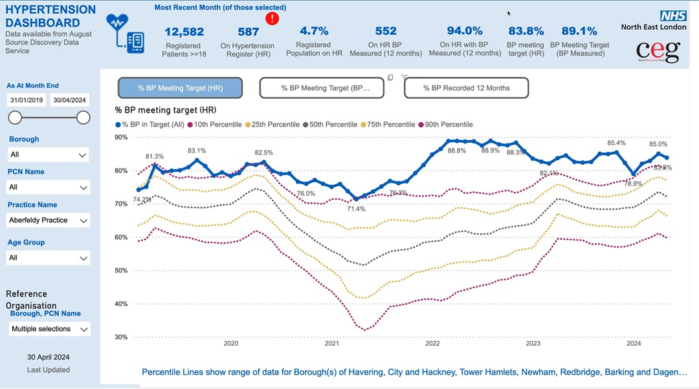
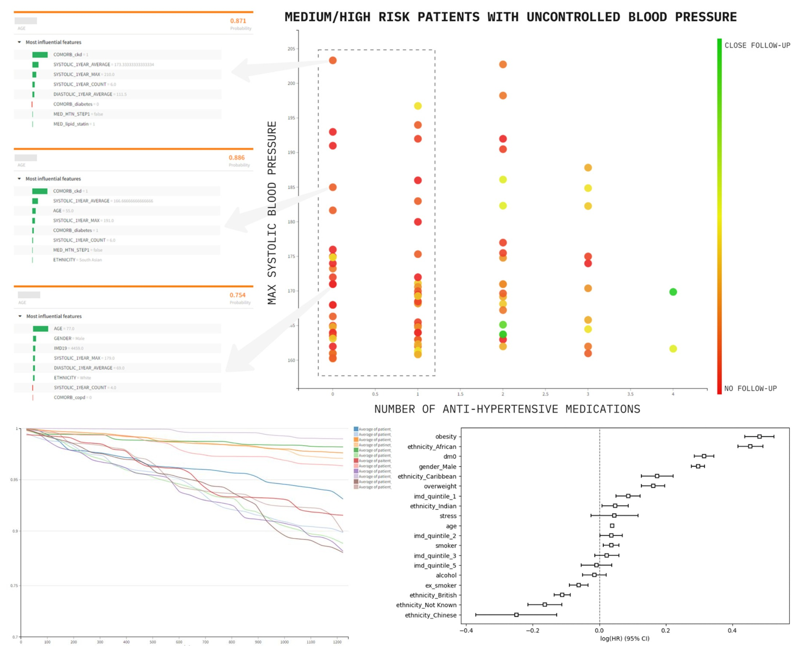

flowchart LR
A["Patient has CKD,
but is not on a Statin"] ==> A1["Assess and consider
starting a Statin"]
B["HbA1c high in two consecutive years,
but patient not identified as Diabetic"] ==> B1["Code for Diabetes, and invite
for clinical assessment and education"]
C["Patient has Hypertension and Diabetes,
is on BB (where ACEi is recommended)"] ==> C1["Assess and consider
medication switch"]
classDef white fill:#fff, stroke:#333, stroke-width:1px
classDef gray fill:#eee, stroke:#333, stroke-width:1px
class A,B,C white
class A1,B1,C1 gray
Cardiovascular Disease Prediction and Prevention
AIM: To enhance descriptive population health management with explainable predictive analytics and clinical guideline-based “decision intelligence” systems, across cardiovascular related co-morbidities (including hypertension, diabetes, chronic kidney disease).
SUMMARY: The spectrum of cardiovascular long-term conditions (LTC) and associated risk factors is wide, and includes hypertension, diabetes, obesity, high cholesterol, ischaemic heart disease, stroke, and chronic kidney disease, as well as dementia, atrial fibrillation, and heart failure. The burden of such diseases is high. Heart disease alone causes a quarter of deaths in the UK, with direct costs to the healthcare system estimated at £9 billion by the British Heart Foundation. Cardiovascular disease is seen as a priority area for use of data across OneLondon patient and public engagement.

In London ICBs, there is robust aggregate understanding of LTC, through prevalence reporting and Quality Outcome Framework (QOF) indicators. Existing ICB dashboards (Figure 1) show how a practice or a system are performing relative to their peers. However, such reporting has limitations, including: (1) lack of adjustment for demographics and other confounding variables; (2) difficulty in surfacing individual patients with direct actions; and (3) lack of consideration of complex co-morbidity phenotypes. This last is particularly important, as multi-morbidity changes the risk profile and urgency of response for individuals. Some of these limitations are being addressed by existing work in London pathfinder programmes, and in other regions such as Greater Manchester, which are moving towards electronic identification of patients who may be actioned via pre-agreed clinical pathways (Figure 2).
These limitations can be surmounted through using richer data to generate personalised risk profiles for individual patients (rather than aggregate group summaries). A previous collaboration between the AIC and North-East London ICB was able to develop precise cardiovascular risk prediction models for individuals, using explainable machine learning algorithms and the linked patient health record. Actionable factors could also be highlighted in patients with high risk, with their relative importance explained through statistical modelling to enhance explainability (Figure 3).

Predictive analytics alone are not a solution. Patients identified as “high risk” may have few clinical factors that can be optimised, and non-specific risk stratification is known to lead to increased resource utilisation without improving outcomes. Instead, this use-case proposes the use of validated clinical guidelines and domain knowledge to identify specific optimisation or preventative actions - much like Figure 2, but systematically, and on a larger scale. The combination of predictive analytics and explicitly defined actions to support decisions, is known as “decision intelligence”.
This use-case will again first develop shared terminologies, features, and code to enhance current pipelines and dashboards. This is an opportunity for using new programme capabiltiies to extend existing work through:
| (1) Using CogStack to extract additional valuable context and missing codes from unstructured text to improve performance, and reduce potential for negative biases, in predictive models; |
| (2) Computerising Quality Outcomes Framework targets and clinical guidelines, in conjunction with local clinical teams, to develop safe decision logic for use as part of an effector arm; |
| (3) Using rich features in the EHR to develop statistical and machine learning models for predicting and understanding risk of progression and acute care utilisation across cardiovascular morbidity and co-morbidity; |
| (4) For a given patient’s health record, understanding actions (i.e. are there actions available, and what are they), combined with explainable risks across multiple conditions (i.e. what are the highest risks for this patient and why), to support decision-making; |
| (5) Returning individual patient insights and suggested actions to clinical systems such as EHR (EMIS) or the London Care Record |
Highly individualised patient profiles are the objective of personalised care, and are a key component of preventative healthcare. Any deployed systems will need to be evaluated and monitored for safety and fairness, with a process of training and handover to continuity teams following the end of this SDE programme phase. This is the objective of on-going work by responsible AI and AI governance teams in the AI Centre.